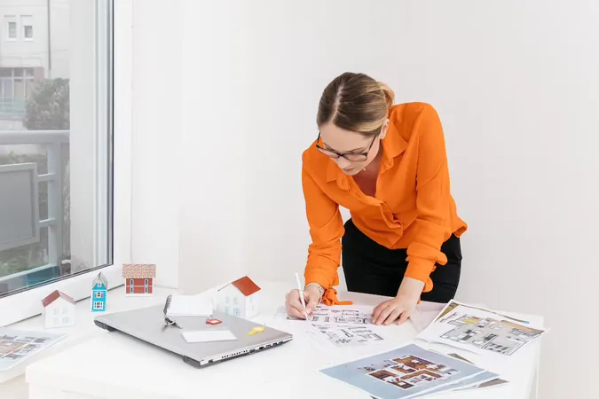

|  |
Софія Гапчинська — засновниця та ідейна натхненницяВітаю! Я вірю, що інтер'єр — це відображення душі. Моя робота базується на пошуку балансу між функціональністю та естетикою класичного мистецтва. Я часто надихаюся динамікою та світлом у полотнах Пітера Пауля Рубенса. Окрім дизайну, моєю пристрастю є фотографія. Це навчило мене бачити, як природне світло змінює простір протягом дня, що я обов'язково враховую у своїх проєктах. |
Олексій Чернов — провідний архітекторОлексій — майстер точності та технічних рішень. Він відповідає за те, щоб найсміливіші ескізи стали реальною конструкцією. Його підхід базується на математичній логіці та ергономіці. Він фанат сучасних технологій та допомагає команді впроваджувати найновіші системи планування, щоб кожен квадратний метр вашої оселі працював на ваш комфорт. |